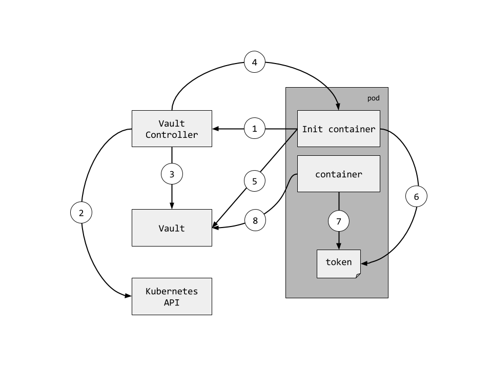

Policy definition:
path "sys/*" {
policy = "deny"
}
path "secret/*" {
policy = "write"
}
path "secret/foo" {
policy = "read"
capabilities = ["create", "sudo"]
}
path "secret/super-secret" {
capabilities = ["deny"]
}
The orchestrator
metadata: name: nginx annotations: key1: value1 key2: value2
metadata: name: nginx annotations: pod.beta.kubernetes.io/init-containers: '[ { "name": "install", "image": "busybox", "command": ["wget", "-O", "/work-dir/index.html", "http://kubernetes.io/index.html"], "volumeMounts": [ { "name": "workdir", "mountPath": "/work-dir" } ] } ]'

&api.TokenCreateRequest{ Policies: strings.Split(policies, ","), Metadata: map[string]string{ "host_ip": pod.Status.HostIP, "namespace": pod.Metadata.Namespace, "pod_ip": pod.Status.PodIP, "pod_name": pod.Metadata.Name, "pod_uid": pod.Metadata.Uid, }, DisplayName: pod.Metadata.Name, Period: ttl, NoParent: true, TTL: ttl, }
spec: replicas: 1 template: metadata: annotations: vaultproject.io/policies: default vaultproject.io/ttl: "24h" pod.alpha.kubernetes.io/init-containers: '[{ "name": "vault-init", "image": "kelseyhightower/vault-init:0.0.1", "env": [ { "name": "POD_NAME", "valueFrom": {"fieldRef": {"fieldPath": "metadata.name"}} }, { "name": "POD_NAMESPACE", "valueFrom": {"fieldRef": {"fieldPath": "metadata.namespace"}} } ], ... "volumeMounts": [ { "name": "vault-token", "mountPath": "/var/run/secrets/vaultproject.io"}]}]' spec: containers: - name: vault-example image: "kelseyhightower/vault-example:0.0.1" volumeMounts: - name: vault-token mountPath: "/var/run/secrets/vaultproject.io"
vault-controller,